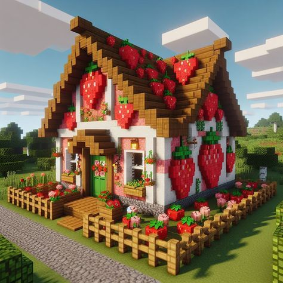
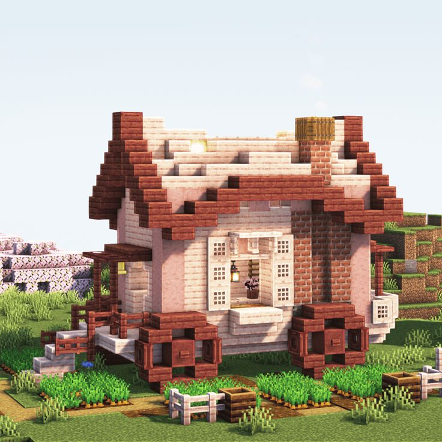
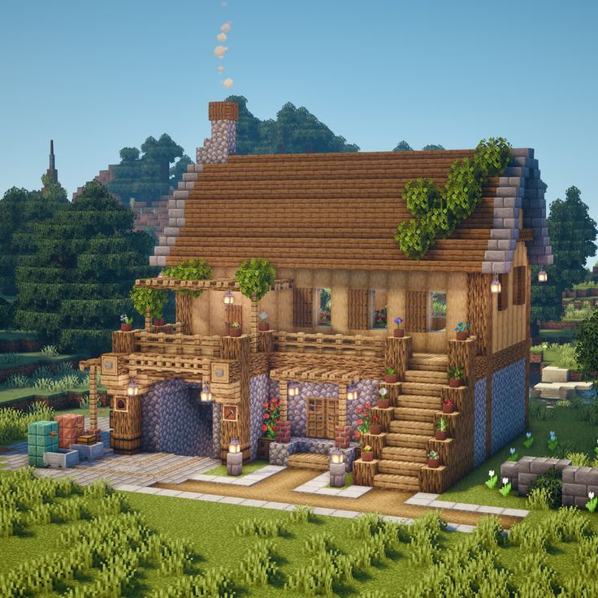
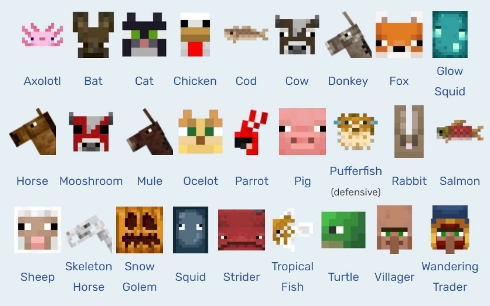
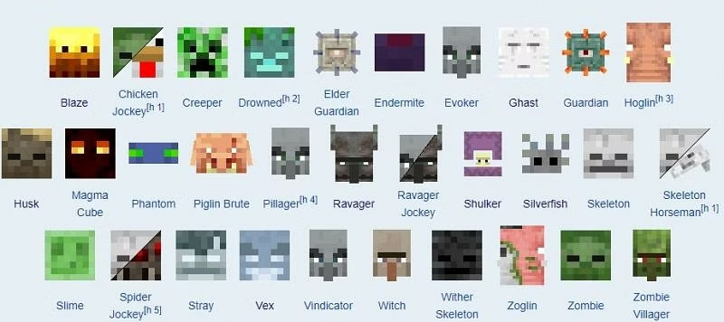

Minecraft é um jogo eletrônico sandbox de sobrevivência criado pelo desenvolvedor sueco Markus "Notch" Persson e posteriormente desenvolvido e publicado pela Mojang Studios.
A propriedade intelectual foi adquirida pela Microsoft em 2014.
O jogo foi lançado inicialmente em maio de 2009 como um projeto em desenvolvimento, com a versão completa sendo lançada em novembro de 2011 para Microsoft Windows, macOS, Linux e alguns dispositivos móveis.
Desde então, Minecraft foi relançado para uma ampla variedade de plataformas.
Esse é o jogo eletrônico mais vendido de todos os tempos, com mais de 300 milhões de cópias vendidas em todas as plataformas até outubro de 2023, e conta com mais de 140 milhões de jogadores ativos mensalmente. Em Minecraft, os jogadores exploram um mundo aberto tridimensional, pixelizado e gerado proceduralmente.
Eles podem descobrir e extrair matérias-primas, criar ferramentas, construir estruturas ou modificar o terreno.
Dependendo do modo de jogo, os jogadores podem combater inimigos controlados por computador, além de cooperar ou competir contra outros jogadores no mesmo mundo.
O jogo também contém um material conhecido como redstone, que pode ser usado para fabricar dispositivos mecânicos primitivos e circuitos elétricos, permitindo a construção de muitos sistemas complexos.
A jogabilidade é apresentada numa perspectiva em primeira pessoa por padrão, mas os jogadores têm a opção de selecionarem uma visão em terceira pessoa.



O mundo de Minecraft é virtualmente infinito e gerado proceduralmente à medida que os jogadores o exploram, usando um mapa ou uma bússola no momento da criação do mundo (ou manualmente conquistado pelo jogador).
Existem limites para o movimento vertical, mas Minecraft permite que um enorme mundo seja gerado no plano horizontal.
Devido a problemas técnicos quando locais extremamente distantes são alcançados, existe uma barreira que impede os jogadores de atravessar para locais além de 30 milhões de blocos a partir do centro do mundo, conhecida como Far Lands.
O jogo consegue fazer isso dividindo os dados do mundo em seções menores, que são criadas ou carregadas apenas quando os jogadores estão por perto.
O mundo é dividido em biomas que variam de desertos a selvas e campos de neve; alguns terrenos incluem planícies, montanhas, florestas, cavernas e vários corpos de lava e água.
O sistema de tempo no jogo segue um ciclo dia e noite, e um ciclo completo dura vinte minutos em tempo real.
Novos jogadores possuem um personagem padrão aleatoriamente selecionado, de Steve ou Alex, mas a opção de criar skins personalizadas foi disponibilizada a partir de 2010.
Os jogadores encontram vários personagens não-jogáveis (NPCs) no mundo do jogo, conhecidos como mobs, como animais, aldeões e criaturas hostis.
Seres passivos, como vacas, porcos e galinhas, podem ser caçados para obter comida e materiais de artesanato.
Eles aparecem durante o dia, enquanto criaturas hostis — incluindo grandes aranhas, esqueletos e zumbis — aparecem durante a noite ou em locais escuros, como cavernas. Alguns desses seres hostis, como zumbis e esqueletos, queimam sob o sol se não tiverem armadura.
Outras criaturas exclusivas de Minecraft incluem o creeper (uma criatura explosiva que se aproxima do jogador) e o enderman (uma criatura com a capacidade de se teletransportar, pegar e colocar blocos).
Existem também variantes de mobs que aparecem em diferentes condições; por exemplo, zumbis têm variantes de casca que aparecem nos desertos.


Esse jogo não possui objetivos específicos a serem alcançados, permitindo aos jogadores uma grande liberdade de escolha de como jogá-lo.
No entanto, existe um sistema de conquistas, conhecido como "progressos" na edição Java.
Além disso, há uma forma não oficial de "terminar" o jogo, que envolve derrotar o Ender Dragon, um dos chefes mais desafiadores do jogo.
A vitória sobre o Ender Dragon leva à exibição dos créditos, indicando um "final" para o jogo.
Minecraft é considerado por muitos críticos e jogadores como um dos melhores jogos de todos os tempos bem como um dos mais influentes.
Em 2015, a USgamer colocou-o em 6º lugar em sua lista dos 15 Melhores Jogos Desde o Ano 2000.
Em 2016, Minecraft foi colocado em 6º lugar na lista dos 50 Melhores Jogos de Todos os Tempos da revista Time.
Em setembro de 2019, a The Guardian classificou Minecraft como o melhor jogo (das duas primeiras décadas) do século 21 e em novembro de 2019 a Polygon chamou-o de "o jogo mais importante da década".
Em dezembro de 2019, a Forbes fez uma menção especial ao Minecraft em uma lista dos melhores jogos dos anos 2010, afirmando que é "sem dúvida um dos jogos mais importantes dos últimos dez anos".